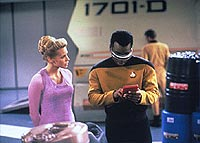
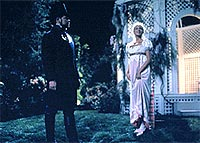
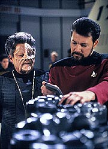
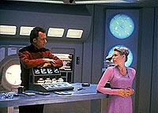

|
MANCHETE
DO EPISDIO
Nova apario de Q discute tema vlido,
mas j no impressiona como antes
Episdio
anterior | Prximo
episdio
Sinopse:
Data Estelar: 46192.3.
Enquanto trabalha para salvar o planeta Tagra IV de um colapso
ambiental causado por poluio, a tripulao recebe Amanda, uma
jovem estudante que foi agraciada, entre centenas de concorrentes,
para servir a bordo da Enterprise.
 A tripulao fica
imediatamente contagiada pelo entusiasmo da jovem. Entretanto,
Amanda tambm tem um segredo que ela mantm escondido de seus
colegas. Ela possui poderes mentais extraordinrios, incluindo a
habilidade de fazer objetos aparecerem simplesmente ao imagin-los.
Ela consegue manter seu poder em segredo, inclusive salvando o
comandante Riker de levar um conteiner na cabea na rea de carga,
mas acaba descoberta quando uma sbita exploso devastadora ocorre
na engenharia. Com a destruio da nave iminente, Amanda junta
seus poderes para conter a exploso, enquanto a tripulao,
chocada, observa.
Quando a equipe snior se rene para discutir o ocorrido, uma
visitante surpresa d o ar da graa para esclarecer tudo: Q. Ele
aparece do nada no meio da reunio com o anncio de que Amanda
uma Q. Ele revela que ele criou a exploso para testar os poderes
da jovem, e, agora que ele est convencido, ele veio para lev-la
de volta ao Continuum Q e salv-la de uma vida empobrecida pela
condio humana.
Picard, entretanto, sente que Amanda deve tomar sua prpria deciso,
e Q, relutantemente, concorda. Uma vez que Q deixa a nave, Picard
secretamente ordena uma investigao sobre a morte dos pais
naturais de Amanda, que foram mortos em um acidente quando ela era
criana. Apesar do acordo que ele fez, o capito no confia em Q.
O onipotente, em compensao, visita Amanda em seus aposentos,
esperando tent-la ao mostrar a capacidade de seus poderes sem
limite. Amanda est interessada apenas em ver seus pais
verdadeiros. Com a ajuda de Q, ela visualiza o casal, e eles se
materializam na frente dela. A sensao aterradora, e, de
repente, Amanda comea a se sentir como um Q.
Confusa, ela divide seus sentimentos com Beverly Crusher, que
incapaz de oferecer algum conselho concreto. Entretanto, quando ela
usa seus poderes para completar um experimento que ela estava
conduzindo para a doutora, Beverly fica incomodada e repreende Q. Em
resposta, ele brevemente converte Crusher em um cachorro.
 Amanda no
pode evitar se divertir com o truque, e comea a testar ainad mais
seus poderes ao brincar de esconde-esconde com seu novo mentor, se
transportando para os mais diferentes lugares. Os dois chegam at a
visitar o exterior da nave.
Depois, ela vai ao bar panormico, onde ela encontra Riker com uma
outra mulher. Enciumada, ela teleporta o comandante, por quem ela se
sente atrada, para uma de suas fantasias romnticas, mas ela fica
desapontada com a artificialidade do resultado. Enquanto isso, Data
descobre que o tornado que matou os pais de Amanda era extremamente
incomum. Picard confronta Q com a informao, e ele admite que o
casal foi executado pelo Continuum Q --e que ele veio Enterprise
para decidir se Amanda deve ser executada tambm.
Picard e sua tripulao decidem revelar a verdade a Amanda.
Furiosa, a jovem confronta Q e exige saber que direito eles tinham
de eliminar outras pessoas. Picard ironicamente lembra Q de sua
suposta superioridade moral, mas Q responde que decidiu no
sacrificar Amanda. Em vez disso, ele oferece a ela uma escolha. Ela
pode acompanh-lo de volta ao Continuum Q ou continuar a viver como
uma humana --se prometer no usar seus poderes de Q.
Amanda imediatamente decide ficar a bordo da Enterprise com seus
novos amigos. Naquele momento, entretanto, o grupo alertado para
uma emergncia --o planeta Tagra IV est em perigo de destruio
imediata. Percebendo que milhares de pessoas morrero, Amanda usa
seus poderes e salva o planeta, transformando-o novamente em um
mundo limpo, verde e despoludo. O evento a fora a aceitar o fato
de que ela uma Q, e ela decide, apesar da tristeza, acompanhar Q
e seguir com sua nova vida.
Comentrios:
"True-Q"
um episdio que fala das limitaes que cada um de ns
tem e das impossibilidade de super-las, quando elas moram na prpria
natureza do indivduo. A premissa bem abrangente, tornando-se
interessante no s para os personagens como tambm para a audincia,
e abordada com a sutileza necessria para evitar esfregar as
mensagens contidas ali na cara do telespectador.
Ao mesmo tempo, a temtica introduzida de forma bem criativa e
inusitada --usando justamente uma raa de capacidades supostamente
ilimitadas, os Q, para demonstrar que todos encontram limitaes,
no impostas pelo meio, mas por sua prpria existncia enquanto
ser vivo de uma determinada categoria.
 Com a dificuldade
de criar uma forma de demonstrar as limitaes de um Q, o recurso
usar um truque: o que aparentemente a fora dessa espcie,
sua onipotncia, se torna sua fraqueza, quando preciso que
Amanda recuse seus poderes e assista passivamente a uma catstrofe
ambiental de largas propores em um planeta aliengena.
Incapaz de ser incapaz, Amanda descobre que sua limitao
justamente negar aquilo que ela , achando ser possvel
simplesmente ignorar suas origens e sua natureza. Quando fica claro
que no , ela se reconcilia com suas razes e aceita ser parte
do Continuum Q.
Por um lado, foi um golpe de mestre usar os Q dessa forma. Por
outro, para criar um legtimo drama humano envolvendo os prprios
Q, foi necessrio diluir essa espcie, humaniz-la, a fim de
aproximar a histria da audincia. Esse processo de eroso da
singularidade representada por Q comea aqui, em A Nova Gerao,
mas s vai atingir seu ponto mximo em Voyager, onde
descobrimos que a dimenso desses aliengenas bem parecida com
a nossa, com direito a guerras civis, lutas pela procriao e
coisas parecidas.
Aqui, por exemplo, descobrimos que um casal de Q visitou a Terra e
decidiu renunciar a sua natureza e se tornar humano. Desse lao
nasceu Amanda, uma Q nascida humana, mas ainda com os poderes de
seus ancestrais.
Tendo em vista o fato de os Q j a terem encontrado e se
apaixonado pela humanidade, difcil entender de onde o nosso
famoso Q, interpretado por John de Lancie, tirou aquela idia de
julgar a humanidade, como visto em "Encounter
at Farpoint". No totalmente irreconcilivel, mas
fica esquisito.
Alm disso, o fato de os Q sempre terem uma vontade e uma tendncia
a se tornarem humanos traz tona o velho "bairrismo" de Jornada
nas Estrelas --os humanos so a raa mais complexa e
interessante de toda a galxia, o que parece pregar a srie!
Tudo isso tira a aura de superioridade e arrogncia dos Q, o que no
faz muito bem a eles. Felizmente, vira e mexe, os "velhos"
Q reaparecem, como podemos verificar no genial "Tapestry",
mais frente nesta temporada.
 Este episdio
no procura se concentrar nos personagens regulares --algo
realmente raro na srie, a essa altura do campeonato. Em vez disso,
aposta todas as suas fichas em recm-chegada Amanda e no impagvel
Q. No primeiro caso, Olivia d'Abo no chega a impressionar (exceto,
claro, pelo charme), mas John de Lancie continua to brilhante
quanto de costume.
A qumica dele com Patrick Stewart impressionante, e foi isso
provavelmente que manteve Q to interessante ao longo dos anos. Ao
lado de outros capites, como Sisko e Janeway, ele nunca mais foi o
mesmo, apesar da sempre convincente roteirizao do personagem e
das competentes atuaes de De Lancie.
Infelizmente o enredo em si no est altura de sua interpretao.
Recheado com material suprfluo (a subtrama com Amanda apaixonada
por Riker soa falsa demais, para no dizer ridcula) e com um
andamento cadenciado demais para permitir alguma empolgao por
parte do pblico, o episdio acaba ficando como uma esquecvel
(embora no lamentvel) apario de Q na srie. Tendo em vista
o potencial do personagem, o resultado poderia ter sido bem melhor.
Mesmo assim, toda hora uma boa hora para rever John de Lancie.
Citaes:
Amanda - "Hard
to imagine how much energy is harnessed from there."
("Difcil imaginar quanta energia liberada dali.")
Data - "Imagination is not necessary. The scale is readily
quantifyable. We are presently generating 12.75 billion gigawatts
per..."
("Imaginao no necessria. A escala facilmente
quantificvel. Estamos neste momento gerando 12,75 bilhes de
gigawatts por...")
Geordi - "Are you saying that you created a core breach just
to test this girl?"
("Est dizendo que voc criou uma ruptura do reator s para
testar essa garota?")
Q - "A-ha."
Troi - "What would have happened if she couldn't stop
it?"
("O que teria ocorrido se ela no pudesse impedi-la?")
Q - "Then I would've known she wasn't a Q."
("Ento eu saberia que ela no era uma Q.")
Trivia:
 Intitulado "Q Me" quase at o final das gravaes, "True-Q"
foi o primeiro episdio com o personagem Q em mais de uma temporada
e meia, aps vrios roteiros serem descartados, inclusive um com o
nome de "Q Olympics".
Intitulado "Q Me" quase at o final das gravaes, "True-Q"
foi o primeiro episdio com o personagem Q em mais de uma temporada
e meia, aps vrios roteiros serem descartados, inclusive um com o
nome de "Q Olympics".
A premissa do episdio foi criada por um escritor de dezessete
anos, Matthew Corey, morador da Carolina do Norte.
Aqui fica estabelecido que quando seu pai, Jack Crusher, morreu,
Wesley tinha cinco anos de idade.
A Base Estelar 112, de "Identity
Crisis", mencionada aqui.
John de Lancie voltar como Q em "Tapestry",
episdio ainda dessa sexta temporada.
Ficha
tcnica:
Escrito por Ren Echevarria
Baseado em material de Matthew Corey
Direo de Robert Scheerer
Exibido em 26/10/1992
Produo: 132
Elenco:
Patrick Stewart como
Jean-Luc Picard
Jonathan Frakes como William Thomas Riker
Brent Spiner como Data
LeVar Burton como Geordi La Forge
Michael Dorn como Worf
Gates McFadden como Beverly Crusher
Marina Sirtis como Deanna Troi
Elenco convidado:
John de Lancie
como Q
Olivia d'Abo como Amanda Rogers
John P. Connolly como Orn Lote
Episdio
anterior | Prximo
episdio
|